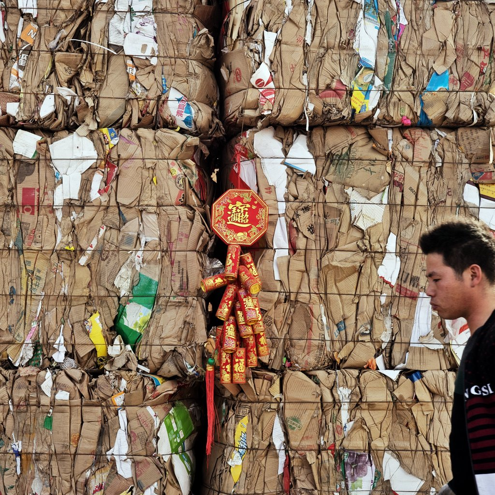

The story of stuff
Life story of a white T-shirt
Extraction & Production

|
|
|
|
|

|
Production

|
|||
|
|
|||
|
|

|
||
Distribution
Consumption

|

|
||||||
Disposal
Garbage
胡嘉明 产品生活：垃圾场的经济、社群与空间
- ● 隐藏的 产品院子——六环外的北京
-
● 垃圾山旁 的生活
- ● 最穷的外省工人
- ● 伤痕累累的环保先锋
- ● 捡垃圾 使他们变得自由
- ● 产品收拾是城市化进程中基层硕果仅存的自主空间
Sim Chi Yin 北京五号线终点处的垃圾回收场
|  | |||
| 压实的纸箱废纸方块每个重达1500磅。这些方块里面的材料侧面反映了中国城市居民不断变化的生活方式 | 一位回收场的工作人员在向一名拾荒者支付劳务费。所有物品都按重计费买卖 | 来自全国各地的民工在附近一个大规模回收场从清晨工作到日暮，收集塑料瓶、油桶、玻璃瓶、旧衣服和电线 | 霍元安携全家从河南来京务工。“大多数雇主都看不上我这么大岁数的工人，”他说。“所以我只能靠卖捡来的废品赚点钱.” |
Say No to Consumption and Material?
We have better choices
Such as...
Recycling
Upcycling

|
|||
| Turn a glass bottle into this modern-looking lamp with | Weave strips of paper bags together to make these cute baskets. | Use an old t-shirt with a cool graphic, and turn it into a stylish pillow. These pillows will be soft addition to your sofa or bed. | This may be hard to replicate, but you can also use stick old buttons on a bowl to create a unique look. |